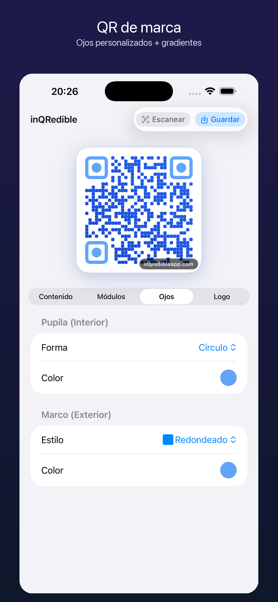

Restaurantes y cafeterías
Imprime un QR Wi-Fi para clientes en menús, mesas o tickets.
QR Wi-Fi para invitados
Usa inQRedible para convertir los datos de una red Wi-Fi en un QR escaneable para invitados, clientes, compañeros o asistentes. La plantilla soporta redes abiertas, WEP, WPA/WPA2 y redes ocultas.

Pasos
Un QR Wi-Fi guarda el nombre de red, modo de seguridad y contraseña en un formato estándar. La persona lo escanea con el móvil en vez de escribir credenciales a mano.
Casos de uso
Imprime un QR Wi-Fi para clientes en menús, mesas o tickets.
Facilita acceso a la red en salas de reuniones y visitas.
Comparte acceso temporal en check-in, stands, viviendas o talleres.